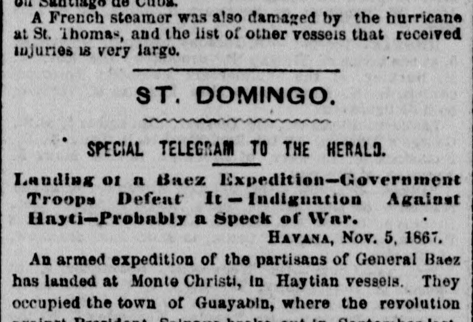
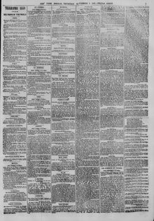

See the full pageVer la página completaAn armed expedition of tbe partisans of General Uaez has landedUna expedición armada de los partidarios del general Báez ha desembarcado
A Havana telegram of November 5, 1867, reports that an armed expedition of partisans of General Báez landed at Monte Cristi in Haitian vessels and occupied Guayabín. Dominican government troops under General Polanco defeated them and suppressed the attempted revolution. Indignation in Santo Domingo against President Salnave of Haiti, long suspected of aiding Báez schemes, led President Cabral to recall his minister from Haiti and go to the Cibao.Un telegrama de La Habana del 5 de noviembre de 1867 informa que una expedición armada de partidarios del general Báez desembarcó en Monte Cristi en buques haitianos y ocupó Guayabín. Las tropas del gobierno dominicano, al mando del general Polanco, los derrotaron y sofocaron el intento de revolución. La indignación en Santo Domingo contra el presidente Salnave de Haití, sospechoso desde hacía tiempo de ayudar a los planes de Báez, llevó al presidente Cabral a retirar a su ministro de Haití y dirigirse al Cibao.
FULL TEXT:TRADUCCIÓN:
ST. DOMINGO.SANTO DOMINGO.
An armed expedition of the partisans of General Baez has landed at Monte Christi, in Haytian vessels. They occupied the town of Guayabin, where the revolution against President Salnave broke out in September last. The troops of the Dominican government, under General E. Polanco, however, beat them, and suppressed the attempted revolution. The leader, [illegible] [illegible] with ten followers, was captured and [illegible] tried by drumhead court martial, and shot [illegible] morning of the 3d of November. The government was preparing a demonstration against Capotillo.Una expedición armada de los partidarios del general Báez ha desembarcado en Monte Cristi, en embarcaciones haitianas. Ocuparon el pueblo de Guayabin, donde la revolución contra el presidente Salnave estalló en septiembre pasado. Las tropas del gobierno dominicano, bajo el general E. Polanco, sin embargo, los derrotaron y sofocaron el intentado movimiento revolucionario. El cabecilla, [ilegible] [ilegible] con diez seguidores, fue capturado y [ilegible] juzgado por un consejo de guerra sumarísimo, y fusilado [ilegible] la mañana del 3 de noviembre. El gobierno estaba preparando una demostración contra Capotillo.
The New York Herald. New York, November 7, 1867.
See the original at the Library of CongressVer el original en la Biblioteca del Congreso
Also published as the New York Daily HeraldTambién publicado como New York Daily Herald
Published by: James Gordon BennettPublicado por: James Gordon Bennett
Edition: Morning Edition (Edition 1)Edición: edición de la mañana (edición 1)
Page: 7Página: 7
Frequency: daily (1840–1920)Frecuencia: diario (1840–1920)
Collection: Chronicling America, Library of CongressColección: Chronicling America, de la Biblioteca del Congreso
LCCN: sn83030313LCCN: sn83030313
ISSN: 2474-3224ISSN: 2474-3224
OCLC: 9467138OCLC: 9467138
Call Number: Newspaper E457.5 .N3Signatura (Call Number): Newspaper E457.5 .N3
Rights: public domain, according to the Library of CongressDerechos: dominio público, según la Biblioteca del Congreso